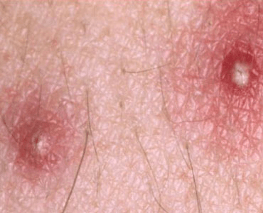

Folliculitis is a skin condition caused by an inflammation of one or
more hair follicles in a limited area. It typically occurs in areas of
irritation, such as sites of shaving, skin friction, or rubbing from clothes.
In most cases of folliculitis, the inflamed follicles are infected with
bacteria, especially with Staphylococcus organisms, that normally live on
the skin.
The most common factors that contribute to the development of folliculitis include:

To help prevent folliculitis: